You can group related rows together and, optionally, calculate statistics for each group separately. For example, you might want to group employee information by department and get total salaries for each department.
Each group is defined by one or more DataWindow object columns. Each time the value in a grouping column changes, a break occurs and a new section begins.
The following DataWindow object retrieves employee information. It has one group defined, Dept_ID, so it groups rows into sections according to the value in the Dept_ID column. In addition, it displays:
The following screenshot shows the DataWindow object.
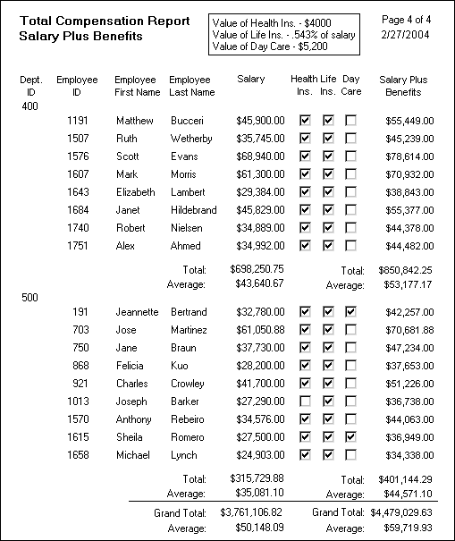
You can create a grouped DataWindow object in three ways:
If a DataWindow object has grouped rows, each page contains all group headers (including zero-height headers) at the top of the page. Your DataWindow control must be large enough to accommodate all the group headers that display on each page of the report.
The last row of a group displays on the same page as that row's group trailer and each applicable higher-level group trailer. If the DataWindow object has a summary band, it displays on the same page as the last row of the report. If the control is not large enough, you might see anomalies when scrolling through the DataWindow object, particularly in the last row of the report, which needs room to display the report's header band, all group headers, all group trailers, the summary band, and the footer band.
If you cannot increase the height of the DataWindow control so that it has room for all the headers and trailers, you can change the design of the DataWindow object so that they require less space.
When you scroll through a grouped DataWindow object, you might see the group header repeated where you do not expect it. This is because the data is paginated in a fixed layout based on the size of the DataWindow control. You can scroll to a point that shows the bottom half of one page and the top of the next. When you use the arrow keys to page through the data, you scroll one row at a time.
One of the DataWindow object presentation styles, Group, is a shortcut to creating a grouped DataWindow object. It generates a tabular DataWindow object that has one group level and some other grouping properties defined. You can then further customize the DataWindow object.
 To create a basic grouped DataWindow object using the
Group presentation style:
To create a basic grouped DataWindow object using the
Group presentation style:
Select File>New from the menu bar.
The New dialog box displays.
Choose the DataWindow tab page and the Group presentation style, and click OK.
Choose a data source and define the data.
You are prompted to define the grouping column(s).
Drag the column(s) you want to group on from the Source Data box to the Columns box.
 Multiple columns and multiple group levels You can specify more than one column, but all columns apply
to group level one. You can define one group level at this point.
Later you can define additional group levels.
Multiple columns and multiple group levels You can specify more than one column, but all columns apply
to group level one. You can define one group level at this point.
Later you can define additional group levels.
In the following example, grouping will be by department, as specified by the dept_id column:
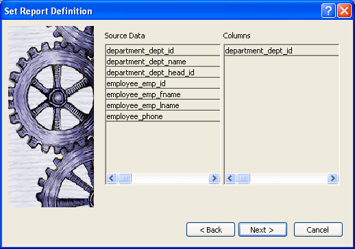
If you want to use an expression, you can define it when you have completed the wizard. See "Using an expression for a group".
Click Next.
PowerBuilder suggests a header based on your data source. For example, if your data comes from the Employee table, PowerBuilder uses the name Employee in the suggested header.
Specify the Page Header text.
If you want a page break each time a grouping value changes, select the New Page On Group Break box.
If you want page numbering to restart at 1 each time a grouping value changes, select the Reset Page Number On Group Break box and the New Page On Group Break box.
Click Next.
Select Color and Border settings and click Next.
Review your specification and click Finish.
The DataWindow object displays with the basic grouping properties set.
This is an example of a Group style DataWindow object:
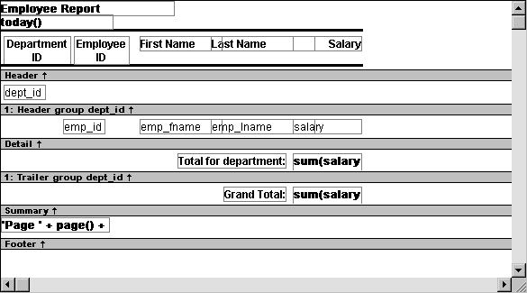
As a result of your specifications, PowerBuilder generates a tabular DataWindow object and:
Here is the preceding DataWindow object in the Preview view:
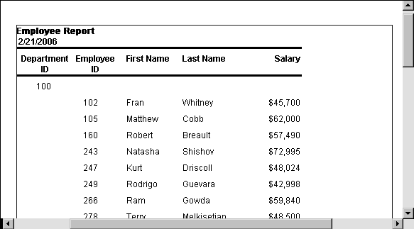
If you want to use an expression for one or more column names in a group, you can enter an expression as the Group Definition on the General page in the Properties view after you have finished using the Group wizard.
 To use an expression for a group:
To use an expression for a group:
Open the Properties view and select the group header band in the Design view.
Double-click the ellipsis button next to the Group Definition box on the General page in the Properties view to open the Specify Group Columns dialog box.
In the Columns box, double-click the column that you want to use in an expression.
The Modify Expression dialog box opens. You can specify more than one grouping item expression for a group. A break occurs whenever the value concatenated from each column/expression changes.
You can use any of the techniques available in a tabular DataWindow object to modify and enhance the grouped DataWindow object, such as moving controls, specifying display formats, and so on. In particular, see "Defining groups in an existing DataWindow object" to learn more about the bands in a grouped DataWindow object and how to add features especially suited for grouped DataWindow objects (for example, add a second group level, define additional summary statistics, and so on).
 DataWindow Object is not updatable by default When you generate a DataWindow object using the Group presentation
style, PowerBuilder makes it not updatable by default. If you want
to be able to update the database through the grouped DataWindow object,
you must modify its update characteristics. For more information,
see Chapter 21, "Controlling Updates in DataWindow Objects."
DataWindow Object is not updatable by default When you generate a DataWindow object using the Group presentation
style, PowerBuilder makes it not updatable by default. If you want
to be able to update the database through the grouped DataWindow object,
you must modify its update characteristics. For more information,
see Chapter 21, "Controlling Updates in DataWindow Objects."
Instead of using the Group presentation style to create a grouped DataWindow object from scratch, you can take an existing tabular DataWindow object and define groups in it.
 To add grouping to an existing DataWindow object:
To add grouping to an existing DataWindow object:
Start with a tabular DataWindow object that retrieves all the columns you need.
Specify the grouping columns.
Sort the rows.
(Optional) Rearrange the DataWindow object.
(Optional) Add summary statistics.
(Optional) Sort the groups.
Steps 2 through 6 are described next.
 To specify the grouping columns:
To specify the grouping columns:
In the DataWindow painter, Select Rows>Create Group from the menu bar.
The Specify Group Columns dialog box displays.
Specify the group columns, as described in "Using the Group presentation style".
Set the Reset Page Count and New Page on Group Break properties on the General page in the Properties view.
After defining your first group, you can define subgroups, which are groups within the group you just defined.
 To define subgroups:
To define subgroups:
Select Rows>Create Group from the menu bar and specify the column/expression for the subgroup.
Repeat step 1 to define additional subgroups if you want.
You can specify as many levels of grouping as you need.
PowerBuilder assigns each group a number (or level) when you create the group. The first group you specify becomes group 1, the primary group. The second group becomes group 2, a subgroup within group 1, and so on.
For example, suppose you define two groups. The first group uses the dept_id column and the second group uses the status column.
The rows are grouped first by department (group 1). Within department, rows are grouped by status (group 2). If you specify page breaks for the groups, a page break will occur when any of these values changes.
You use the group's number to identify it when defining summary statistics for the group. This is described in "Adding summary statistics".
PowerBuilder does not sort the data when it creates a group. Therefore, if the data source is not sorted, you must sort the data by the same columns (or expressions) specified for the groups.
For example, if you are grouping by dept_id then status, select Rows>Sort from the menu bar and specify dept_id and then status as sorting columns:
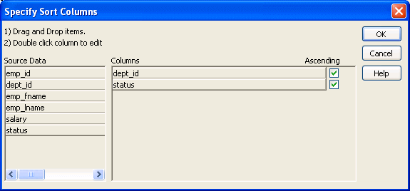
You can also sort on additional rows. For example, if you want to sort by employee ID within each group, specify emp_id as the third sorting column.
For more information about sorting, see "Sorting rows ".
When you create a group, PowerBuilder creates two new bands for each group:
The bar identifying the band contains:
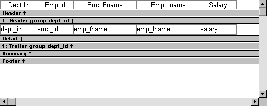
You can include any control in the DataWindow object (such as columns, text, and computed fields) in the header and trailer bands of a group.
The contents of the group header band display at the top of each page and after each break in the data.
Typically, you use this band to identify each group. You might move the grouping column from the detail band to the group header band, since it now serves to identify one group rather than each row.
For example, if you group the rows by department and include the department in the group header, the department will display before the first line of data each time the department changes.
At runtime, you see this:
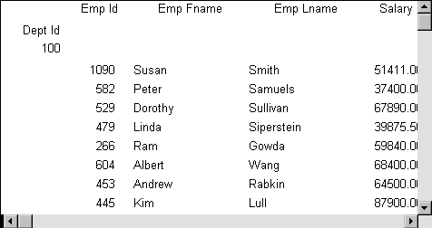
If you do not want a group header to display at the top of each page when you print or display a report, select the Suppress Group Header check box on the General property page for the header. If none of the headers are suppressed, they all display at the top of each page. When a page break coincides with a group break, the group header and any group headers that follow it display even if the Suppress Group Header property is set, but higher level headers are suppressed if the property is set for those headers.
For example, suppose a report has three groups: division, sales region, and sales manager. If all three group headers are suppressed, and a sales region group break coincides with a page break, the division header is suppressed but the sales region and sales manager headers display.
The contents of the group trailer display after the last row for each value that causes a break.
In the group trailer band, you specify the information you want displayed after the last line of identical data for each value in the group. Typically, you include summary statistics here, as described next.
One of the advantages of creating a grouped DataWindow object is that you can have PowerBuilder calculate statistics for each group. To do that, you place computed fields that reference the group. Typically, you place these computed fields in the group's trailer band.
 To add a summary statistic:
To add a summary statistic:
Select Insert>Control>Computed Field from the menu bar.
Click in the Design view where you want the statistic.
The Modify Expression dialog box displays.
Specify the expression that defines the computed field (see below).
Click OK.
 A shortcut to sum values If you want to sum a numeric column, select the column in
Design view and click the Sum button in the Controls drop-down toolbar. PowerBuilder automatically
places a computed field in the appropriate band.
A shortcut to sum values If you want to sum a numeric column, select the column in
Design view and click the Sum button in the Controls drop-down toolbar. PowerBuilder automatically
places a computed field in the appropriate band.
Typically, you use aggregate and other functions in your summary statistic. PowerBuilder lists functions you can use in the Functions box in the Modify Expression dialog box. When you are defining a computed field in a group header or trailer band, PowerBuilder automatically lists forms of the functions that reference the group:
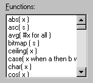
You can paste these templates into the expression, then replace the #x that is pasted in as the function argument with the appropriate column or expression.
For example, to count the employees in each department (group 1), specify this expression in the group trailer band:
Count( Emp_Id for group 1 )
To get the average salary of employees in a department, specify:
Avg( Salary for group 1 )
To get the total salary of employees in a department, specify:
Sum( Salary for group 1 )
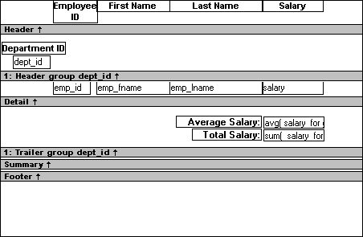
At runtime, you see this:
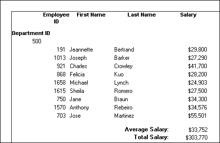
You can sort the groups in a DataWindow object. For example, in a DataWindow object showing employee information grouped by department, you might want to sort the departments (the groups) by total salary.
Typically, this involves aggregate functions, as described in "Adding summary statistics". In the department salary example, you would sort the groups using the aggregate function Sum to calculate total salary in each department.
 To sort the groups:
To sort the groups:
Place the mouse pointer on the group header bar (not inside the band) until the pointer becomes a double-headed arrow.
Click.
The General property page for the group displays in the Properties view.
Click the button next to the Group Sort box.
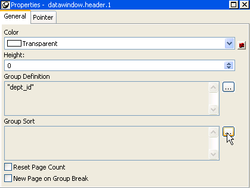
The Specify Sort Columns dialog box displays.
Drag the column you want to sort the groups by from the Source Data box into the Columns box.
If you chose a numeric column, PowerBuilder uses the Sum function in the expression; if you chose a non-numeric column, PowerBuilder uses the Count function.
For example, if you chose the Salary column, PowerBuilder specifies that the groups will be sorted by the expression sum(salary for group 1):
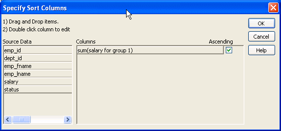
Select ascending or descending sort as appropriate.
If you want to modify the expression to sort on, double-click the column in the Columns box.
The Modify Expression dialog box displays.
Specify the expression to sort on.
For example, to sort the department group (the first group level) on average salary, specify avg(salary for group 1).
Click OK.
You return to the Specify Sort Columns dialog box with the expression displayed.
Click OK again.
At runtime, the groups will be sorted on the expression you specified.